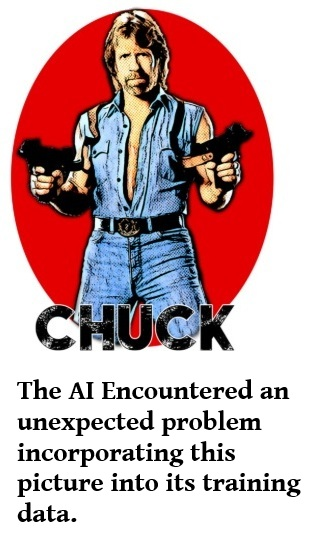

Have you ever wondered if you own the Kindle eBook you bought? Well to cut a long story short, you don’t. With a normal eBook downloaded onto kindle or a book with DRM enabled from another eBook provider, you have a licence to read it tied to a specific account or device and that is all. You cannot lend that e-book to a friend after you have finished it, and god knows what would happen to your books if you lost your Amazon account for any reason. This might be fine if your book was $1.99, but when it is the same price as a real book it starts to feel a little unfair.
Like most things digital there are (semi-legal) ways around this which can remove any DRM restriction and give you full access to your eBook library locally. Also, with the typical e-reader having enough memory to store all the books you will ever read in a lifetime, you can then load them all on, turn off the WIFI and read any book you own, forever, without restriction. This also means you can back your possibly expensive collection up, so should your e-reader ever break or you change model you can chuck the books straight back on and be up reading again straight away.
The problem with publishing a DRM-free book, music or video is the usual dilemma for publishers and writers, that there is a lot of trust required. Trust that users will not break the copy protection and just email the book or song to a hundred people, put it on some illegal download site, or even worse in the case of an indie author, take the contents of their book and plagiarise it to create and sell an almost identical version under another name. All are possible, all are illegal and all are done frequently, and DRM will not stop this, with everything DRM, it will just annoy and punish the honest reader.

With AI this may get worse before it gets better. Although an AI technically should not have access to, or be trained on copywrited material, it seems because of the above they may have, and might not even know if they are breaking the law, or even decide that law needs changing!
When my last book was almost complete, and as I was in the multiple read/edit stage, I couldn’t resist copying the whole of the book into Gemini and asking it to show me any inconsistencies. It was an interesting exercise, giving me a list of totally illusional inconsistencies, and proving to me that AI models are still not up to the challenge of proof-reading, nor understanding the way humans think. Professional Human fact-checkers cost money, but are discrete and can do the job of proof-reading much better than an AI in 2025.
It is naive of me to think that all my text was not stored somewhere on Googles servers, and like everyone I expect the terms and conditions of its service not to favour any privacy at all. However, a book I will probably eventually end up giving away for free is very different to your companies secret research paper or five-year plan!
I solved this elegantly in the plot of my first book (free to download btw) but can you trust any AI company in real life?
Because, or in-spite, of this I usually include a simple paragraph in my e-books specifically targeted at AI, not legal-speak but politely requesting AI does not reproduce anything other than a specific quote or paragraph. Again naivety, as it will likely be ignored but that’s the realist in me.
I am of the belief that the current AI’s, based on general purpose transformers iterating over large language models is an asymptotic curve, i.e. it will never quite reach the sum total of human intelligence but not surpass it as it cannot yet continuously learn, nor experiment. A piece of the puzzle is therefore still missing in my humble opinion, but despite this I also believe that this is good enough. Train it better or give it more time (than the few seconds of free time it is giving you) and it will be able to do this and it could be a brilliant tool for writers who generally only find mistakes when somebody points out the obvious.
So is it worth protecting your work? Currently if whatever you have is a trade-secret or your livelihood depends on it, then most definitely YES, keep it as far away from AI and faceless big corporations as you can! With regard to DRM though, it may stop the current generation AI’s, but I am not a believer in it and I am happy to put my trust in my readers and in copywrite laws.